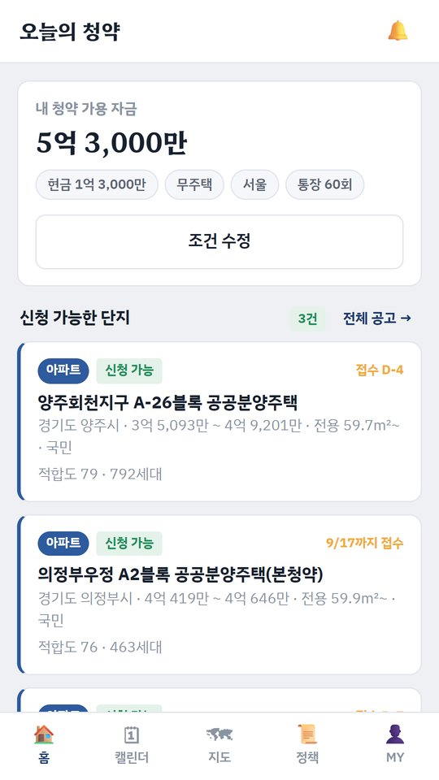
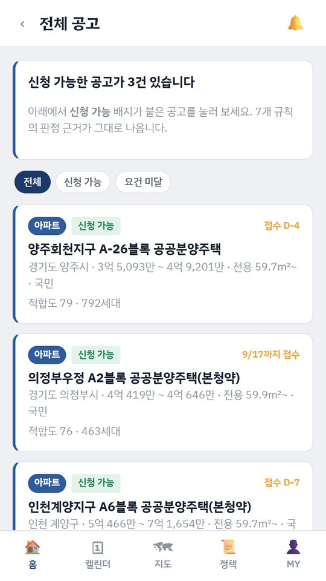
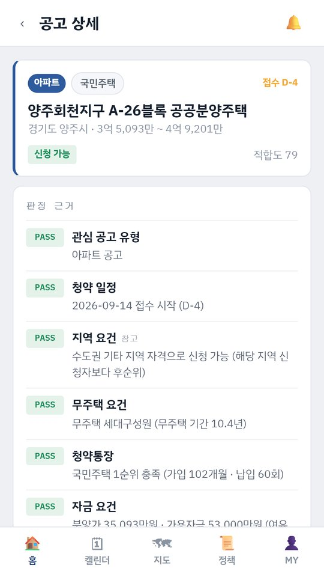
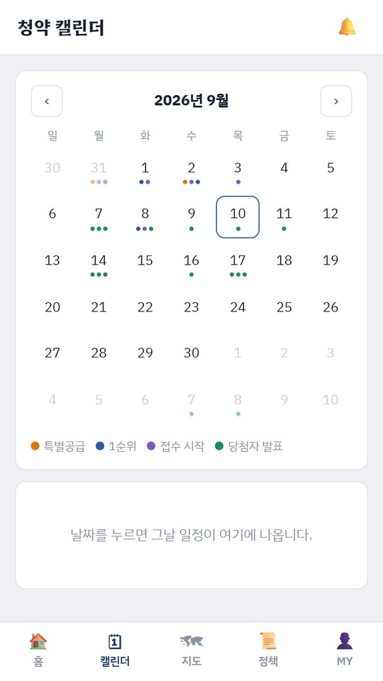
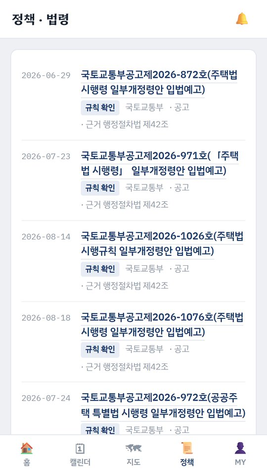
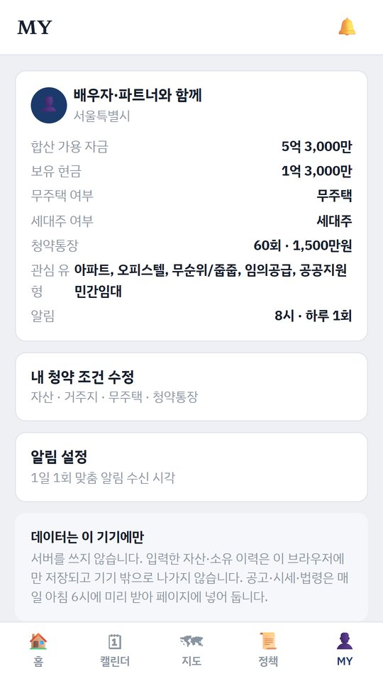
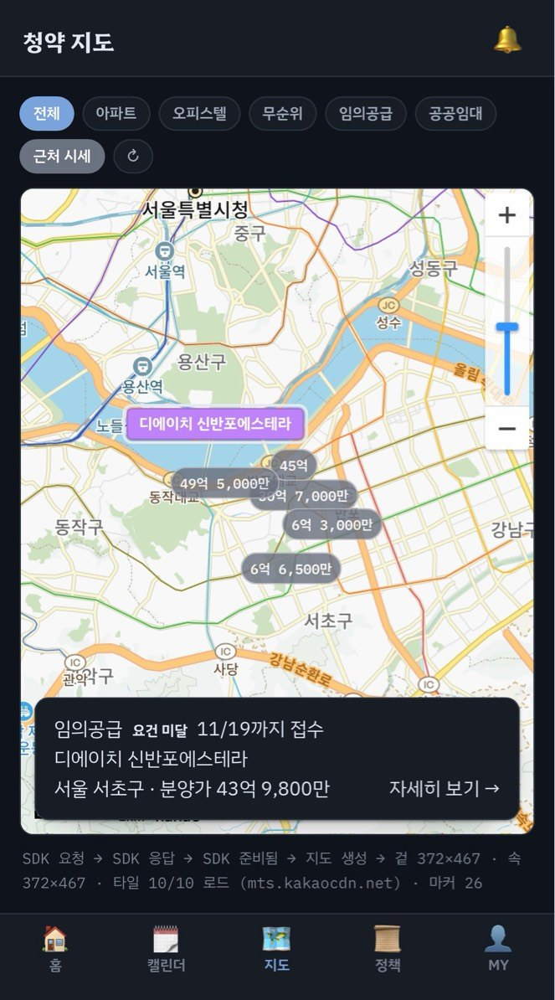
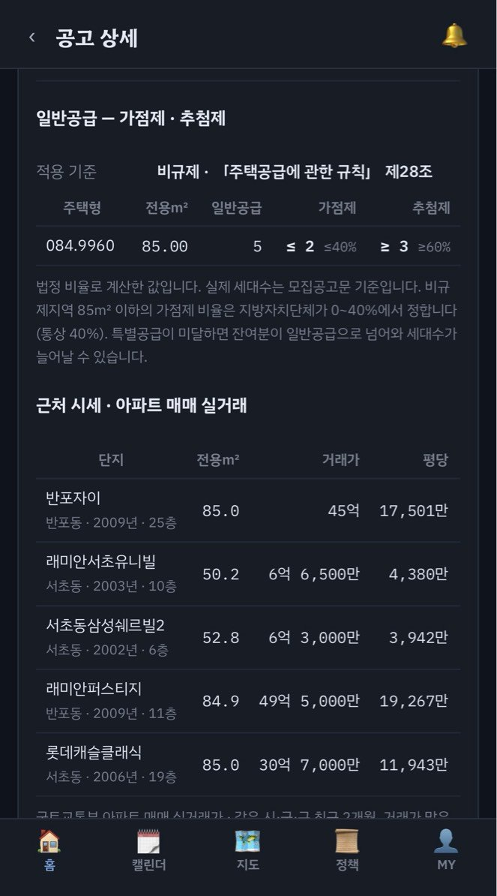

← 포트폴리오/Project 03
Project 03 · FinTech Product · AI · PM / PO
아워체크(OurCheck) — 청약 자격 판정 앱 v1.0 · 자금 사전승인 설계 v2.0
v1.0은 "이 공고, 내가 넣을 수 있나"에 답하는 앱으로 개발해 Beta 테스트 중입니다. v2.0 설계안은 한 질문을 더합니다 — "당첨되면 살 수 있나." 그리고 그 답을 대출 연결로 잇습니다.
00 · Overview
v1 → v2 — 자격 판정에서 자금 사전승인과 실행까지
"청약 자격 판정" 앱을 자금 사전승인 + 공고문 AI 해석 + 실행(대출 연결)으로 넓힌 두 번째 설계입니다. v1의 9개 화면을 유지하고, 세 겹 판정과 실행을 위한 화면을 더했습니다.
화면 구성 (12개)
| ID | 화면 | v1 대비 | 핵심 데이터 |
|---|---|---|---|
S01 | 온보딩 — 데이터 연결 | 변경 | 마이데이터 동의 / 수동 입력 폼 |
S02 | 홈 — 사전승인 카드 | 변경 | 승인 상태, 가용자금, 적격 공고 |
S03 | 전체 공고 — 상태 필터 | 변경 | 공고 × 4상태 |
S04 | 공고 상세 — 판정·자금·공고문·시세 | 변경 | 규칙 결과, 현금흐름, 추출 요건, 실거래 |
S05 | 자금 플랜 | 신규 | LTV/DSR 한도, 정책대출 자격, 월별 현금흐름 |
S06 | 가구 타임라인 | 신규 | 혼인·출산·전입일 × 특공 자격 |
S07 | 대출 연결 | 신규 | 상품 후보, 넘길 항목, 제휴사 이동 |
S08–S12 | 캘린더 · 지도 · 정책/법령/정정 공고 · 알림 · MY | 유지 / 변경 | 일정·마커·관보 × 승인 상태, 연결·동의 관리 |
01 · IA & Privacy
정보구조와 온디바이스 프라이버시 아키텍처
왼쪽이 소스, 가운데가 기기 안 판정, 오른쪽이 화면과 실행입니다. 개인 데이터는 가운데 상자를 벗어나지 않고, 맨 끝의 대출 연결만 사용자가 골라서 넘깁니다.
← 좌우로 밀어서 보기 →
주황 상자 = 본인 동의가 필요한 데이터와 앱 밖으로 나가는 지점. 점선 = 기기 경계.
사전승인 상태 정의 — 다섯 상태만 쓴다
| 상태 | 조건 | 카드 표시 | 다음 행동 |
|---|---|---|---|
| 승인 | 자격 필수 규칙 전부 통과 그리고 자금 플랜의 모든 납입 시점에서 현금 + 확정 대출 ≥ 납입액 | 초록 배지 · 왼쪽 초록 띠 | 일정 알림 켜기 · 캘린더 등록 |
| 조건부 | 자격 통과, 자금은 추가 대출이 있어야 맞음 (부족분 > 0, 정책대출·주담대 후보 있음) | 주황 배지 "조건부 · 3,000만 부족" | S07 대출 연결 |
| 자격만 | 자격 통과, 자금 불가(후보 대출로도 부족) 또는 임대 공고(자금 판정 제외) | 회색 배지 "자격만" | S06 타임라인 · 예산 조정 |
| 불가 | 자격 필수 규칙 중 하나 이상 실패 | 왼쪽 빨간 띠 · "막는 요건 — ○○" | S04 판정 근거 확인 |
| 만료 | 마이데이터 갱신 90일 경과 또는 공고 정정으로 재판정 필요 | 흐림 + "갱신 필요" 버튼 | S12 데이터 다시 받기 |
프라이버시 설계 원칙
- 앱 서버 없음 — 판정·저장은 전부 기기 안
- 동의는 항목별로. "전체 동의" 버튼을 맨 위에 두지 않음
- 배우자 원본은 가져오지 않음 — 배우자 기기에서 만든 합산 코드(요약값)만
- 알림·공유 이미지에 금액·세대·출산 예정 없음
웹은 어디까지
- 웹은 마이데이터를 붙일 수 없음(도메인 인증·CORS)
- 수동 입력 + 공개 데이터로 ① 자격과 ② 자금의 수동 부분까지 계산
- 마이데이터·대출 연결은 "앱에서 이어서"로 안내
- 판정 코드의 정본은 앱, 웹은 사본
02 · Screen Showcase
핵심 화면 설계 및 인터랙션 v2.0 설계안
12개 화면 중 핵심 다섯 장면입니다. 탭을 눌러 화면을 바꾸면 폰 목업과 설계 주석이 함께 바뀝니다(←/→ 키로도 이동할 수 있습니다).
S01 온보딩 — 데이터 연결
첫 실행에 한 번. 마이데이터로 채우거나 v1처럼 손으로 넣는 두 갈래를 나란히 놓고 고르게 합니다. 어느 쪽이든 3분 안에 홈에 도착합니다.
둘 다 같은 프로필을 만든다
마이데이터든 수동이든 결과는 같은 Profile. 판정 엔진은 출처를 모르고, 출처는 항목별 출처 태그로만 남깁니다.
동의는 항목별로
받을 항목을 체크리스트로 보여 주고, 끈 항목은 수동 입력 칸으로 바뀝니다.
세대원 정보는 본인 것만
배우자 자산은 배우자가 자기 기기에서 연결해 합산 코드로 합칩니다. 배우자 원본을 내 기기로 가져오지 않습니다.
실패해도 홈에 간다
연결이 중간에 끊기면 받은 항목까지 저장하고 나머지는 수동 칸으로. 온보딩은 항상 홈으로 끝납니다.
S02 홈 — 사전승인 카드
v1의 "가용 자금" 카드가 "사전승인 상태"로 바뀝니다 — 자격 · 자금 · 특공 세 줄과 갱신일. 아래에는 신청할 수 있는 단지만 둡니다.
상태 카드는 세 줄
자격 · 자금 · 특공. 각 줄은 판정 근거를 한 문장으로 요약합니다.
갱신일이 보인다
마이데이터는 90일, 공개 데이터는 매일. 둘 중 오래된 쪽을 표시하고, 만료면 카드가 흐려집니다.
Preapproval.refreshedAt = min(mydata.at, data.at)카드에 자금 한 줄이 늘었다
계약금 · 중도금 대출 가능 여부 · 잔금 시점 — "당첨되면 살 수 있나"의 요약. 조건부면 부족분 + 메울 방법으로 바뀝니다.
홈에는 승인·조건부만
조건부는 실행하면 되는 것이라 홈에 둡니다. 0건이면 가장 가까운 대안과 "얼마가 더 필요한지"를 보여 줍니다.
S04 공고 상세 — 공고문 AI 추출 탭
긴 한 화면을 판정 · 자금 · 공고문 · 시세 네 탭으로 나눴습니다. 공고문 탭은 모집공고문 PDF에서 LLM이 추출한 요건을 원문 문장과 쪽수와 함께 보여 줍니다.
근거 문장이 핵심
추출값마다 원문 문장과 쪽수를 붙입니다. 신뢰도가 낮으면 값 대신 "공고문 확인"을 쓰고 문장만 보여 줍니다.
NoticeExtract{field, value, quote, page, confidence}"특히 볼 것"은 내 조건과 교차한 것만
재당첨 제한이 있다고 다 경고하지 않습니다. 내 세대에 당첨 이력이 있을 수 있거나 거주의무가 내 계획과 충돌할 때만.
판정 탭 = v1 7규칙
PASS/FAIL 목록, 지역 "참고", 특공 가점, 가점·추첨 세대수(계산값 표시)는 v1 그대로.
"잘못 읽었으면 알려 주기"
사용자 정정은 기기에 저장되고 다음 판정에 우선합니다. 서버가 없어 모으지는 않습니다.
S05 자금 플랜 — 당첨되면 살 수 있나신규
공고 하나의 납입 일정에 내 현금과 대출을 얹어 봅니다. 위는 한도, 가운데는 타임라인, 아래는 부족분과 메울 방법. 모든 숫자는 출처를 눌러 볼 수 있습니다.
한도는 규제지역 값에서 나온다
LTV는 공고의 규제지역 플래그와 주택 가격 구간으로, DSR은 소득·기존 부채와 스트레스 금리로 계산. 상수는 한 곳에 두고 화면에 "적용 기준일"을 찍습니다.
LoanRules.ltv(zone, price, firstHome) · dsr(income, debts, stressRate)정책대출은 자격부터
디딤돌·보금자리론·신생아특례·신혼부부 전용 상품의 소득·자산·가격·면적 요건을 대조해 가능 / 소득 초과 / 가격 초과로 표시합니다.
부족분은 시점별로
합계가 맞아도 특정 시점에 모자랄 수 있습니다. 각 납입일의 누적 잔액이 처음 음수가 되는 시점을 부족으로 잡습니다.
"메우는 방법"은 실행 가능한 것만
자격이 되는 정책대출 추가 한도, 사용자가 넣을 수 있는 예정 자금만. "부모 지원"처럼 확인할 수 없는 항목은 제안하지 않습니다.
S06 가구 타임라인 & S07 대출 연결신규
"언제 하면 자격이 열리나"를 시점 슬라이더로 답하고(S06), 조건부 판정의 부족분은 상품으로 잇되 넘기는 항목을 사용자가 고르게 합니다(S07).
실제와 가정을 구분한다
마이데이터·입력값은 "실제", 사용자가 옮긴 값은 "가정". 가정은 저장하지 않고 이 화면 안에서만 삽니다.
Profile.withAssumptions({...}) — 저장 안 함규칙마다 기간 창(window)
신혼 7년, 신생아 2년, 생애최초 소득세 5년. 각 규칙은 (열리는 날, 닫히는 날)을 돌려주고 화면은 그 두 날짜만 보여 줍니다.
넘기는 항목은 기본 최소
필요 금액·시점과 공고 정보만 켜져 있고, 소득·세대는 꺼져 있습니다. 켜도 요약값만, 원본은 어떤 경우에도 넘기지 않습니다.
Handoff{amount, dueAt, notice, income?: summary, household?: summary}광고와 판정을 섞지 않는다
상품 순서는 자격·금리 순이지 수수료 순이 아닙니다. 제휴 형태와 수수료 수취 여부를 화면에 한 줄로 밝힙니다.
03 · Domain Logic
도메인 로직 및 공통 규칙
판정은 앱의 판정 엔진 한 곳이 정본이고, 모든 화면은 그 결과와 근거를 보여 주기만 합니다.
① 7규칙 자격 판정 (v1 계승)
공고 유형별로 차등 적용하고 세대 단위로 봅니다. 여러 규칙이 실패해도 카드에는 첫 번째 필수 실패 한 줄만 보이며, 순서는 고정입니다.
② LTV / DSR 한도 계산
- LTV — 공고의 규제지역 플래그 × 주택 가격 구간 × 생애최초 여부
- DSR — 소득 · 기존 부채 · 스트레스 금리
- 상수는 한 곳에 두고 "적용 기준일"을 화면에 표시
③ 시점별 현금흐름과 부족분
납입 일정은 공고문 추출값을 쓰고, 없으면 기본값(계약 10% · 중도 60% · 잔금 30%)을 쓰되 "가정"으로 표시합니다. 각 납입일에 아래 값을 계산해 처음 음수가 되는 시점을 부족으로 잡습니다.
④ 근거 표시 원칙
- 판정 값 옆에 규칙 코드 · 조문 · 공고문 문장 · 데이터 출처 중 하나 이상
- 근거 없는 숫자는 "가정"으로 표시
- 모든 값에 출처 태그(공공 · 금융 · 배우자 · 입력)
- 임대 공고는 자금 판정 제외 — 보증금을 분양가 잣대로 재지 않음
화면을 가로지르는 공통 규칙
| 규칙 | 내용 |
|---|---|
| 상태 배지 | 다섯 상태만. 카드 왼쪽 띠 색 = 배지 색. 상태는 색 + 글자로 함께 표시(접근성) |
| 숫자 표기 | 만 원 단위, 억 단위 구분(5억 3,000만). 비율은 정수 %, 금리는 소수 1자리 |
| 빈 상태 | "없습니다"로 끝내지 않는다 — 가장 가까운 대안(자격만 1건, 필요 금액, 열리는 날짜) |
| 오류 | 키 없음 · 네트워크 · 파싱 실패를 구분. 데이터가 없는 것과 못 받은 것을 섞지 않는다 |
| 규칙 상수 갱신 | 법령 개정은 사람이 상수 → 테스트 → 문서를 함께 고친다. 앱은 "갱신 예정"만 표시 |
| 면책 | 상세·MY 하단에 "판정은 참고용, 최종 자격은 모집공고문" 고정 문구 |
04 · Test Gallery
테스트 화면 갤러리
v1.0 구동 화면입니다(2026-09 · 11 캡처, 다크 모드 포함). v2.0의 사전승인 카드 · 자금 플랜 · 대출 연결 화면은 설계 단계이며, 개발 후 이 자리에 더합니다.
Google Play 비공개 테스트 트랙 등록
Google Play Console에 com.ourcheck.app(아워체크)로 등록해 비공개 테스트(Closed testing) 단계로 운영 중입니다. 공개 출시 전, 초대한 테스터 대상으로 실기기 검증을 하고 있습니다.








화면 속 단지·금액은 테스트용 예시 프로필 기준입니다.